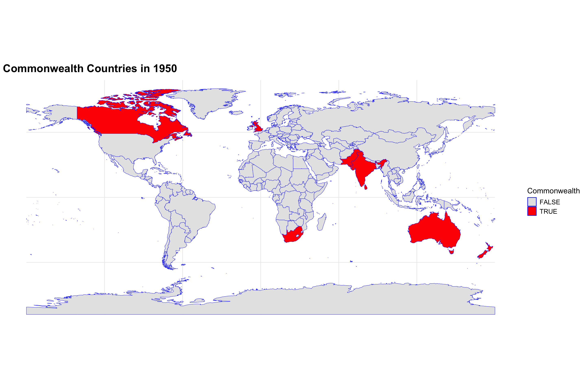
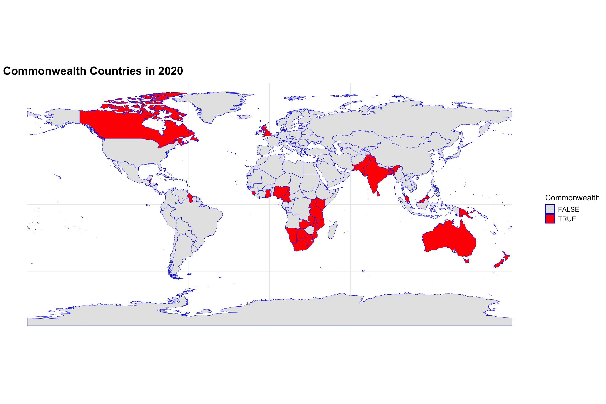
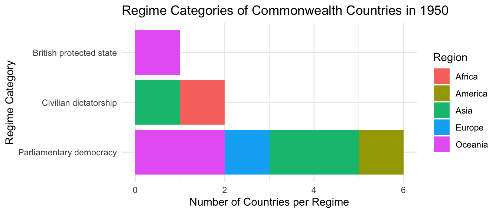
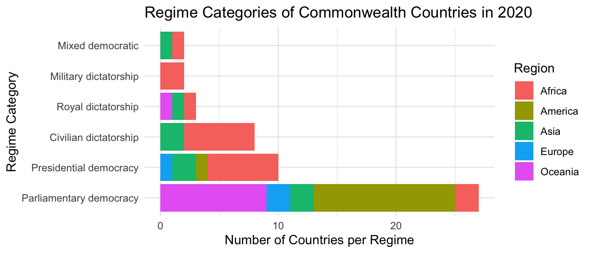
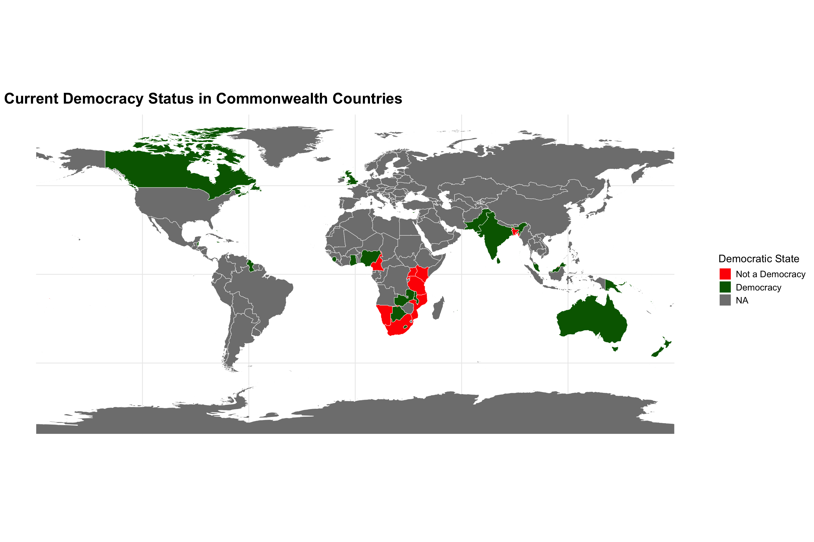
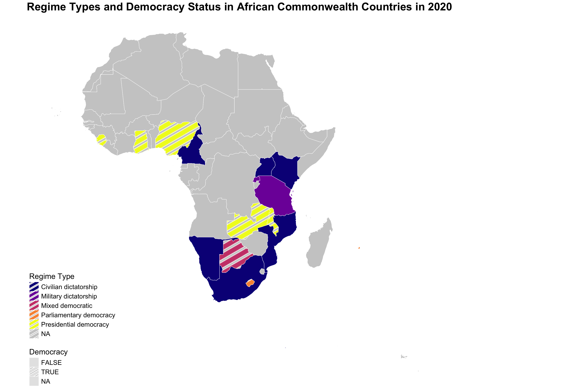

project title
Your report will go here.
Code
library(ggplot2)
library(rnaturalearth)
library(rnaturalearthdata)
library(dplyr)
library(sf)
world <- ne_countries(scale = "medium", returnclass = "sf")
commonwealth_1950 <- commonwealth |>
filter(year == 1950)
world <- world |>
mutate(is_commonwealth = name %in% commonwealth_1950$country_name)
ggplot(data = world) +
geom_sf(aes(fill = is_commonwealth), color = "blue") +
scale_fill_manual(values = c("TRUE" = "red", "FALSE" = "grey90")) +
theme_minimal() +
labs(title = "Commonwealth Countries in 1950", fill = "Commonwealth") +
theme(
plot.title = element_text(size = 20, face = "bold"),
legend.title = element_text(size = 14),
legend.text = element_text(size = 12),
)
Code
commonwealth_2020 <- commonwealth |>
filter(year == 2020)
world <- world |>
mutate(is_commonwealth = name %in% commonwealth_2020$country_name)
ggplot(data = world) +
geom_sf(aes(fill = is_commonwealth), color = "blue") +
scale_fill_manual(values = c("TRUE" = "red", "FALSE" = "grey90")) +
theme_minimal() +
labs(title = "Commonwealth Countries in 2020", fill = "Commonwealth") +
theme(
plot.title = element_text(size = 20, face = "bold"),
legend.title = element_text(size = 14),
legend.text = element_text(size = 12),
)
Part II
::: Democracy trends :::
Code
commonwealth_1950 <- commonwealth_1950 %>%
mutate(region = case_when(
country_name == "Australia" ~ "Oceania",
country_name == "Canada" ~ "America",
country_name == "India" ~ "Asia",
country_name == "New Zealand" ~ "Oceania",
country_name == "Pakistan" ~ "Asia",
country_name == "South Africa" ~ "Africa",
country_name == "Sri Lanka" ~ "Asia",
country_name == "Tonga" ~ "Oceania",
country_name == "United Kingdom" ~ "Europe"))
commonwealth_2020 <- commonwealth_2020 %>%
mutate(region = case_when(
country_name %in% c("Botswana", "Cameroon", "Ghana", "Kenya", "Lesotho", "Malawi",
"Mauritius", "Mozambique", "Namibia", "Nigeria", "Rwanda",
"Seychelles", "Sierra Leone", "South Africa", "Swaziland",
"Tanzania", "Uganda", "Zambia") ~ "Africa",
country_name %in% c("Bangladesh", "Brunei", "India", "Maldives","Malaysia",
"Pakistan", "Singapore", "Sri Lanka") ~ "Asia",
country_name %in% c("Cyprus", "Malta", "United Kingdom") ~ "Europe",
country_name %in% c("Australia", "Kiribati", "Nauru", "New Zealand",
"Papua New Guinea", "Samoa", "Solomon Islands",
"Tonga", "Tuvalu", "Vanuatu") ~ "Oceania",
country_name %in% c("Antigua and Barbuda", "Bahamas", "Barbados", "Belize",
"Canada", "Dominica", "Grenada", "Guyana", "Jamaica",
"St. Kitts & Nevis", "St. Lucia", "St.Vincent & Grenadines",
"Trinidad &Tobago") ~ "America"))Code

Code

::: Changes in regime :::
Code

Code

Part III
::: Democrary Over Time :::
Code
cw_map <- world |>
left_join(commonwealth_2020, by = c("name" = "country_name"))
ggplot(cw_map) +
geom_sf(aes(fill = is_democracy), color = "white") +
scale_fill_manual(values = c("TRUE" = "darkgreen", "FALSE" = "red", "NA" = "gray"),
labels = c("TRUE" = "Democracy", "FALSE" = "Not a Democracy", "NA" = "No Data")) +
labs(
title = "Current Democracy Status in Commonwealth Countries",
fill = "Democratic State"
) +
theme_minimal() +
theme(plot.title = element_text(size = 20, face = "bold"),
legend.title = element_text(size = 14),
legend.text = element_text(size = 12)
)
Code
library(ggpattern)
library(ggthemes)
africa_map <- world |>
filter(region_un == "Africa") |>
left_join(commonwealth_2020, by = c("name" = "country_name"))
ggplot(africa_map) +
geom_sf_pattern(
aes(fill = regime_category, pattern = is_democracy),
color = "white",
pattern_color = "white",
pattern_density = 0.3,
pattern_spacing = 0.02,
pattern_key_scale_factor = 0.6,
size = 0.2
) +
scale_fill_viridis_d(option = "plasma", na.value = "gray80") +
scale_pattern_manual(values = c("TRUE" = "stripe", "FALSE" = "none")) +
labs(
title = "Regime Types and Democracy Status in African Commonwealth Countries in 2020",
fill = "Regime Type",
pattern = "Democracy"
) +
theme_map() +
theme(plot.title = element_text(size = 20, face = "bold"),
legend.title = element_text(size = 14),
legend.text = element_text(size = 12)
)